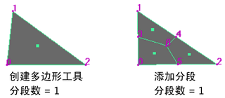

在“建模”(Modeling)菜单集中，选择“网格工具 > 创建多边形”(Mesh Tools > Create Polygon) >  可打开这些选项。有关如何使用该工具的详细信息，请参见创建多边形网格。
可打开这些选项。有关如何使用该工具的详细信息，请参见创建多边形网格。
- 分段(Divisions)
-
指定要将创建的多边形的边分割的“分段”(Divisions)数量。默认值为 1。将沿着边创建额外的顶点。您可以在后续操作中，操纵这些顶点。
注： 设置“分段”(Divisions)选项不同于使用编辑网格 > 添加分段(Edit Mesh > Add Divisions)将多边形细分。“分段”(Divisions)使多边形具有 n 条边。使用“添加分段”(Add Division)操作默认创建新面。要新建顶点，必须仅专门对边进行细分（有关详细信息，请参见分割多边形边）。 - 保持新面为平面(Keep new faces planar)
-
默认情况下，使用“创建多边形工具”(Create Polygon Tool)添加的任何面位于附加到的多边形网格的相同平面。如果要将多边形附加在其他平面上，请禁用“保持新面为平面”(Keep new faces planar)。
注： 当启用或禁用“保持新面为平面”(Keep new faces planar)时，Maya 还会在网格工具 > 附加到多边形工具(Mesh Tools > Append to Polygon Tool)下启用或禁用相同的设置。退出 Maya 时，将设置保存到首选项文件。在您更改该设置之前，它适用于所有新对象。 - 限制点数(Limit the number of points)
-
指定新多边形所需的顶点数量。默认值为 4，可以创建四条边的多边形（四边形）。如果设置为 3，该工具将创建三条边的多边形（三角形）。在放置选项中指定数量的点之后，多边形将自动关闭，并可以在视图中继续单击以创建新的多边形，而不必重新选择工具。
- 纹理空间(Texture space)
- 指定如何为新多边形创建 UV 纹理坐标 (UV)。有三种设置可选：“归一化”(Normalize)、“单位化”(Unitize)和“无”(None)。
- 归一化(Normalize)
-
如果选择了“归一化”(Normalize)，纹理坐标将缩放，以适应范围为 0 到 1 的 UV 纹理空间，同时 UV 面的原始形状保持不变。
- 单位化(Unitize)
-
如果选择了“单位化”(Unitize)，纹理坐标将放置在范围为 0 到 1 的纹理空间的角和边界处。包含 3 个顶点的多边形将有一个三角形 UV 纹理贴图（各个边的长度相等），而包含 3 个以上顶点的多边形将有一个方形 UV 纹理贴图。
- 无(None)
-
指定将不为新的多边形创建 UV。
有关 UV 的详细信息，请参见映射 UV。